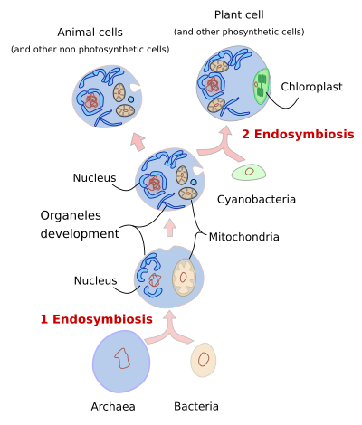
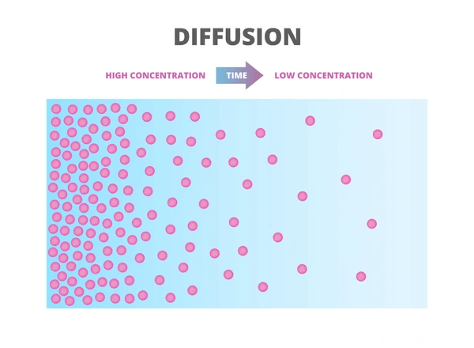
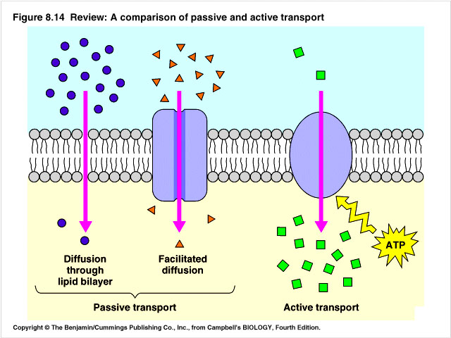
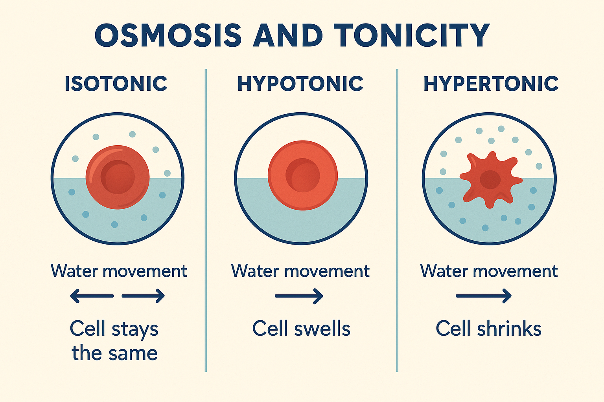
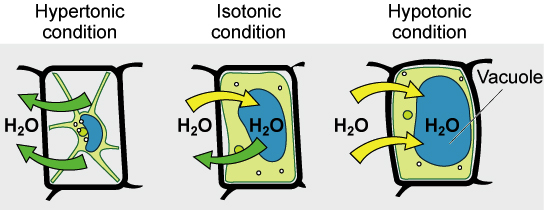

Unit 2: Cell Structure and Function
Cell Theory & Cell Types:
1. All living things are made of cells.
2. Cells are the basic unit of life.
3. New cells are produced from existing cells.
| Features | Prokaryotic Cells | Eukaryotic Cells |
|---|---|---|
| Size | Small | Large |
| DNA | Free in cytosol | In nucleus |
| Membrane-bound Organelles | No | Yes |
| Examples | Bacteria | Plants, Animals |
Endosymbiotic Theory : Mitochondria and chloroplasts were once free-living prokaryotes that were engulfed by a larger cell, leading to a symbiotic relationship.
Evidence for Endosymbiotic Theory:
- Mitochondria and chloroplasts have their own DNA, which is circular like prokaryotic DNA.
- They have double membranes which supports the idea that they were engulfed

Cell Organelles and their Functions:
| Organelle | Function |
|---|---|
| Nucleus |
|
| Ribosomes |
|
| Endoplasmic Reticulum (ER) |
|
| Golgi Apparatus |
|
| Mitochondria |
|
| Lysosomes |
|
| Vacuoles |
|
| Chloroplasts |
|


Plasma / Cell Membrane Structure:
Main Components :
- Hydrophilic Heads of Phospholipid bilayer
- Hydrophobic Tails of Phospholipid bilayer
- Proteins (Transport, Signaling)
- Cholesterol (Maintains Fluidity, Stability and Permeability of Cell Membrane)
- Carbohydrates (Cell Recognition)
Cell membrane includes selective permeability, only specific molecules can enter and exit
Transport Mechanism
Passive Transport : requires no ATP to transport material
- Simple Diffusion : movement from high to low concentration gradient
- Facilitated Diffusion : uses transport proteins to move from high to low concentration gradient

- Osmosis : movement of water from low solute concentration to high solute concentration (high water concentration to low water concentration)
Active Transport : requires ATP to transport material
- Protein Pumps & Carriers : moves substance against concentration gradient
EX. : NA+/K+ Pump (sodium-potassium pump helps ensure cell interior is more negatively charged than environment)

- Vesicle Transport : Membrane folds inwards and forms a vesicle which transports materials in bulk either through exocytosis (out of the cell) or endocytosis (into the cell)
Tonicity : a measure of a solution's ability to change the cell's water content
- Hypertonic : cell shrinks due to lack of water
- Hypotonic : cell swells due to too much water (animal cells will burst but not plant cells due to cell wall)
- Isotonic : when both water content in the environment and cell reaches equilibrium


Surface to Volume Ratio: Cell exchange materials in the most efficient way by having a large surface to volume ratio which allows increased activity. (Cells develop more folds or elongated shapes to increase Surface to Volume ratio)
Eukaryotic Compartmentalization : These cells have specialized environments which increases efficiency, allows for multiple reactions at once, regulating processes.
Cell Junctions (only in multicellular organisms) :
- Tight Junction : prevents leakages between cells when gaps are present
- Desmosomes : anchor cells together through adhesion which provides structural support and stability in tissues like the heart
- Gap Junctions : communication channels that connect adjacent cells to each other, allowing passage of ions and small molecules.